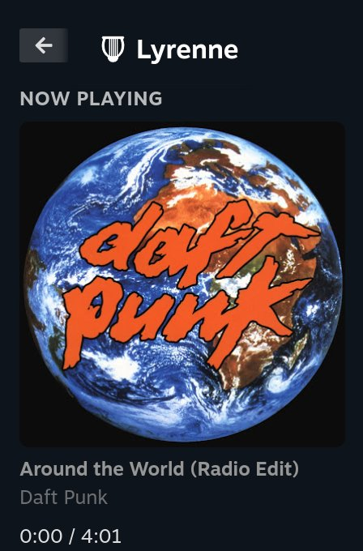
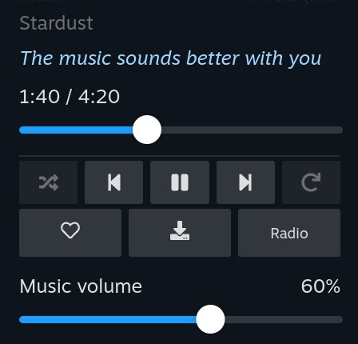
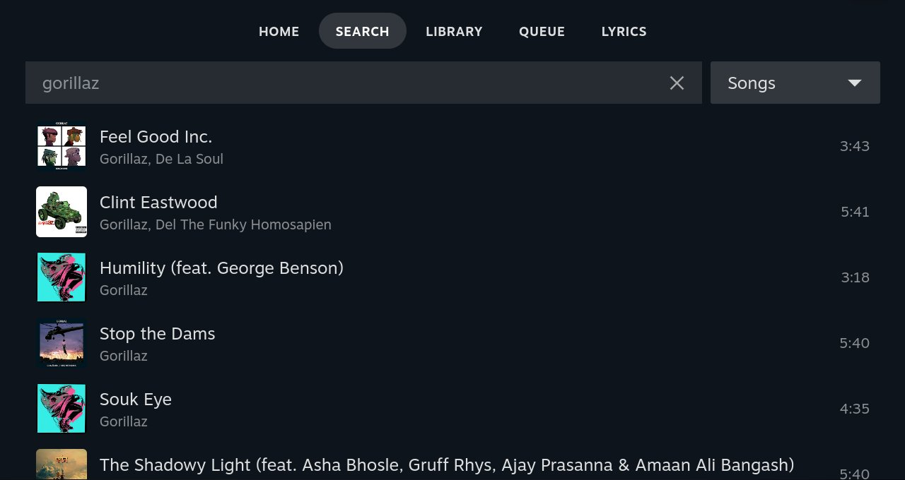
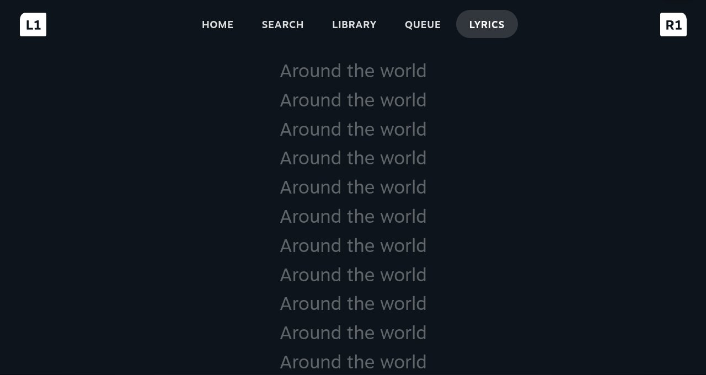

LyrenneYouTube Music for Steam Deck
Your YouTube Music library in Game Mode. Pick a playlist from the Quick Access Menu, keep playing your game, and turn the music down without touching the game's volume. Free, open source, no ads.
Get the pluginMusic While You Game
There's no YouTube Music app for Steam Deck's Game Mode, and alt-tabbing to a browser in Desktop Mode means quitting your game. Lyrenne for Decky puts the player in the Quick Access Menu instead: press the ... button, play something, and you're back in your game.
It runs Lyrenne, the desktop YouTube Music player, in the background with no window. So it's the same player: your real library and playlists, the same lyrics sources, the same downloads.




Features
Control it mid-game
Album art, the current lyric line, seek, play and pause, skip, shuffle, repeat, like, download and radio, without leaving your game.
Music has its own volume
Turn the music down for a cutscene and back up after, without changing the game's volume.
Your whole library
Home, search, liked songs, playlists, albums, artists and the queue on full-screen pages that open over the game. A plays, X plays next, Y adds to the queue.
Synced lyrics
The line being sung shows right in the panel, with a full-screen lyrics page when you want to follow along.
Light on the Deck
Under 1% of one CPU core while playing and no measurable extra power draw. About 250 MB of RAM out of 16 GB.
Downloads and sleep timer
Download songs for a flight, and set a sleep timer for 15 minutes to an hour and a half, or the end of the song.
Install
Install Decky Loader if you don't have it, and turn on its Developer mode (Decky settings).
In Decky's Developer settings, use Install plugin from URL and paste the link to Lyrenne.zip from the latest release. That's the only file you need: Decky downloads the rest on its own.
Open Lyrenne in the Quick Access Menu and press Sign in to YouTube Music. Steam opens a browser: tap Accept all, sign in (STEAM + X brings up the keyboard), then close the tab.
FAQ
Can you play YouTube Music on Steam Deck while gaming?
Yes. Lyrenne for Decky plays YouTube Music in the background in Game Mode and puts the controls in the Quick Access Menu, so you never leave your game.
Is it in the Decky store?
Not yet. Install it with Decky's Install plugin from URL option (Developer mode), using the Lyrenne.zip link from the latest release on GitHub.
Does it drain the battery?
Not measurably. While playing it uses under 1% of one CPU core, and power readings on a Steam Deck OLED showed no difference between Lyrenne stopped, idle and playing.
Is it free?
Yes. It's free and open source under GPL-3.0, with no ads and no account of its own. You sign in with your own YouTube Music account.